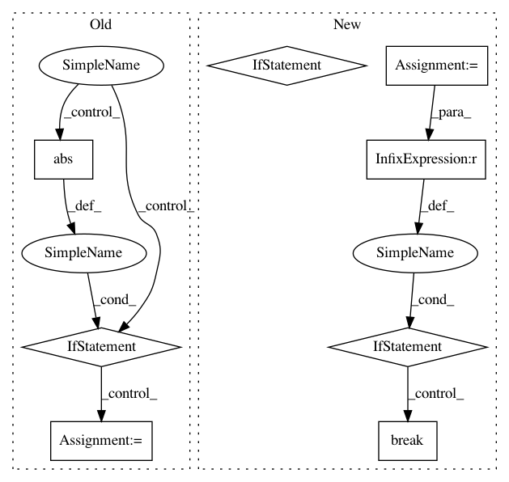

4367785c9131771d2dd80b45d4bbb4ca00bd24ac,pyglmnet/pyglmnet.py,GLM,fit,#GLM#Any#Any#,661
Before Change
if t > 1:
DL.append(L[-1] - L[-2])
if np.abs(DL[-1] / L[-1]) < tol:
msg = ("\tConverged. Loss function:"
" {0:.2f}").format(L[-1])
logger.info(msg)
msg = ("\tdL/L: {0:.6f}\n".format(DL[-1] / L[-1]))
logger.info(msg)
break
// Update the estimated variables
self.beta0_ = beta[0]
self.beta_ = beta[1:]
self.ynull_ = np.mean(y)
self._loss = L
After Change
reg_lambda, X, y, self.eta,
beta)
if t > 1:
if np.linalg.norm(grad) / np.linalg.norm(beta) < tol / lr:
msg = ("\tConverged in {0:d} iterations".format(t))
logger.info(msg)
break
beta = beta - self.learning_rate * grad
elif self.solver == "cdfast":
beta_old = deepcopy(beta)
beta, z = \
self._cdfast(X, y, z, ActiveSet, beta, reg_lambda)
if t > 1:
if np.linalg.norm(beta - beta_old) / \
np.linalg.norm(beta_old) < tol / lr:
msg = ("\tConverged in {0:d} iterations".format(t))
logger.info(msg)
break
// Apply proximal operator
beta[1:] = self._prox(beta[1:], reg_lambda * alpha)
// Update active set
if self.solver == "cdfast":
In pattern: SUPERPATTERN
Frequency: 3
Non-data size: 8
Instances
Project Name: glm-tools/pyglmnet
Commit Name: 4367785c9131771d2dd80b45d4bbb4ca00bd24ac
Time: 2018-09-08
Author: pavan.ramkumar@gmail.com
File Name: pyglmnet/pyglmnet.py
Class Name: GLM
Method Name: fit
Project Name: glm-tools/pyglmnet
Commit Name: a68ad3bda020d9ade2b33c58a3f1406de41b682c
Time: 2018-09-05
Author: pavan.ramkumar@gmail.com
File Name: pyglmnet/pyglmnet.py
Class Name: GLM
Method Name: fit
Project Name: idaholab/raven
Commit Name: 3cee81f6d6f9637d21aad32d360844f6ce7a90c4
Time: 2017-06-21
Author: paul.talbot@inl.gov
File Name: framework/Optimizers/GradientBasedOptimizer.py
Class Name: GradientBasedOptimizer
Method Name: _removeRedundantTraj
Project Name: glm-tools/pyglmnet
Commit Name: 4367785c9131771d2dd80b45d4bbb4ca00bd24ac
Time: 2018-09-08
Author: pavan.ramkumar@gmail.com
File Name: pyglmnet/pyglmnet.py
Class Name: GLM
Method Name: fit